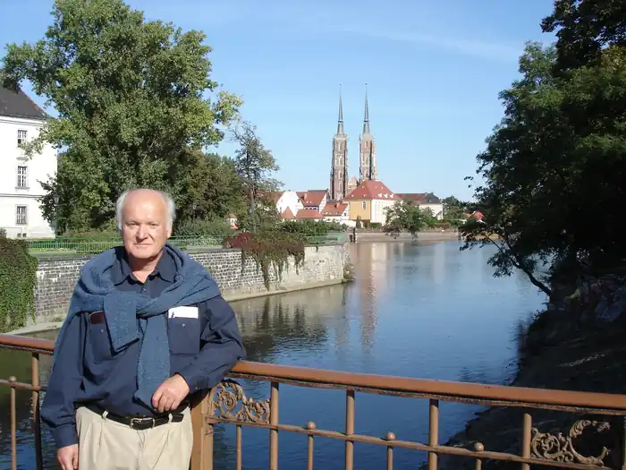
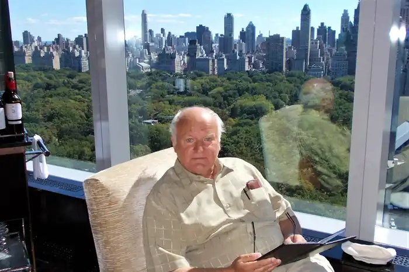

"Від пограниччя до орбіти" — це твір — автобіографія Мацея Патковського, народженого 13 листопада 1936 р. у Торуні, польського прозаїка, сценариста і драматурга, одного з письменників сучасності. Випускник юридичного факультету Вроцлавського університету (1960). Під час навчання займався студентською пресою та був співзасновником тижневика "Погляди".
Дебютував романом "Скорпіони" (1959), перекладеним сімома мовами. Того ж року вийшла друком "Гармонійка", а роком пізніше "Полуднє". За мотивами цього роману було знято фільм "Шкляна гора" режисера Павла Коморовського. Його наступні книжки — Sobótki, Bus to Joy (2001). Він також був автором п'єс, зокрема: І все-таки додому..., Двоє біля річки та сценарії фільмів тощо. Котячі сліди. Півстоліття прожив у США, де виконував різні професії. Після багаторічної перерви він повернувся до письменницької діяльності. У 2001 році вийшла книга Stefan Wyszyński — Primas of Kampinos, а пізніше Otatni walc.
Останніми роками вийшли його наступні книги: "Від пограниччя до орбіти", "Коломийка", "Шопен і Майорка". Розмови, листи, спогади.